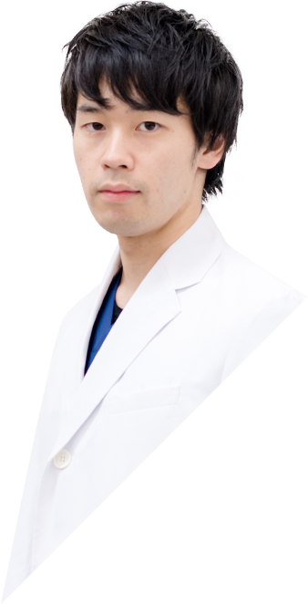
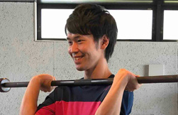
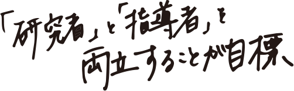
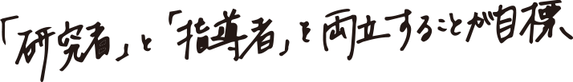
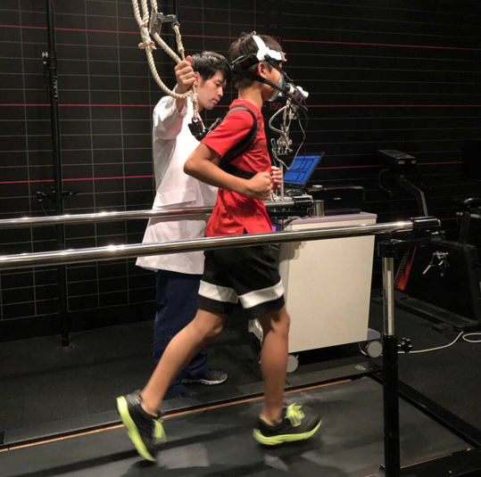
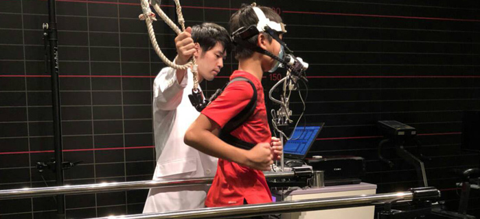
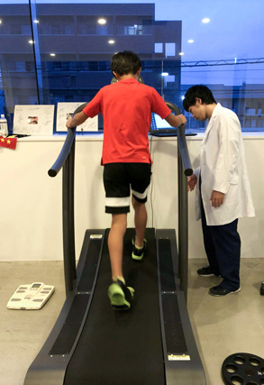
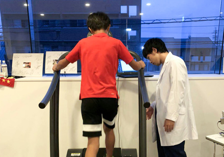
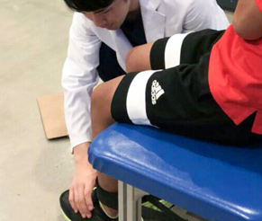

INTERVIEW先輩の声
HOME > 先輩の声 井出 遼己



中塚 英弥HIDEYA NAKATSUKA
研究所 次長
2011年 入社

中塚 英弥HIDEYA NAKATSUKA
研究所 次長 / 2011年 入社
浜松大学（現・常葉大学）健康プロデュース学部・心身マネジメント学科を卒業し、新卒採用で入社しました。高校時代までは富士市で暮らし、大学からは浜松で暮らしています。大学では陸上競技部に所属し、３年の半ばからはキャプテンを務めていました。
大学時代の陸上部の監督でもある里大輔先生とアローズとの関わりが深かったことが、この会社に興味を持ったキッカケです。就職先にアローズを選んだ大きな要因は、大学での学びを生かせる職場だということはもちろん、社会人になっても陸上を続けていける環境が大きかったです。
一般企業だと夕方に仕事が終わってそこから練習に行くことになりますが、それだと１日の疲れが残ってしまっていて練習の質が上がりません。アローズなら、午前中のフレッシュな状態で練習ができるので、スポーツに生きる私には最適な環境だと思いました。
WORKS仕事について
スポーツ事業部で小中高生を中心にトレーニング指導を行っています。私の勤務するアローズジム サンストリート浜北には大人向けのコースもあるため、子供たちのみならず大人の方へのトレーニング指導も行なっています。
代表的な１日の流れとしては、13時に出勤して営業開始の準備をします。ジムの中を掃除したり、通行客のみなさんにアローズを認知してもらえるような広告の方法を考えたり、実際に広告物を作ったりすることもあります。
15時ごろから会員様がいらっしゃるので、そこからトレーニング指導がはじまります。会員様は絶えずいらっしゃるため、決してラクな仕事ではありませんが、会員様とのコミュニケーションや、子供たちの成長を見守ることは楽しいので、業務がつらいと感じることはないですね。
22時に営業終了となり、そのあとに終礼を行います。アローズ サンストリート浜北では、終礼時に毎日必ず１人が「Good」「Bad」「Next」を発表します。Goodは今日の良かったこと、Badは今日の悪かったこと、そしてNextは次からのアクションプランです。まずはGoodから発言することが、ポジティブな振り返りになる秘訣です。


会議に限らず、普段の業務でも
新人だからこそできることがあると思っています。
THOUGHT仕事への想い
会社に入ってわかったことは「仕事は決してラクではない」ということ。
仕事をしていれば、つらいことや大変なことはたくさんあって、自分を取り巻く環境に不満が生まれるのは当たり前だと思います。せっかくいい会社に入ったのに、不満をたくさん並べて、環境を変えればどうにかなるだろうと飛び出してしまう人だっていると思います。
でも、私は長い陸上競技生活を通じて、継続は力になることを知っています。もちろんただ続けるばかりではなく、強い信念や意思を持ち続けていくことが、成功への近道だと思っているので、この会社でも陸上競技から教わったことを胸に頑張っていこうと思っています。
何事もポジティブに考えることができることが自分の強みだと思っていますが、これも陸上部の里先生の指導のおかげで、いくら感謝しても足りないぐらいです。
ABOUT US社内の雰囲気
アローズは、社内にきちんとした上下関係がありながらも、
私のような新入社員にも発言の機会を与えてくれる働きやすい会社だと思います。
新入社員ながら重要な会議に参加させていただくこともありますが、新人ならではの突拍子もないような意見も、しっかり聞いてくれる先輩や上司には恵まれていますね。これが大企業になると、まず会議に呼ばれませんから（笑）
とくに、私が勤務するアローズ浜北の武田塾長は、人の意見を絶対に否定せず、まずは肯定してくれる、そんな懐の深さをもった上司です。
あえて社内環境に不満をあげるなら、同期の人数が少ないことと、そして上司が優しすぎることでしょうか（笑）
DREAM&GOALS夢・目標について
まず、スポーツに携わる人間として2020年の東京オリンピックには何としてでも関わりたい、貢献したいと思っています。そのためには何をすればいいのか、いまの私にはまだハッキリ見えてはいませんが、ここアローズは夢に限りなく近い環境だと思っています。
さらに長期的な仕事の目標としては、アローズはスポーツという手段をもった教育機関でもあると思っていますので、子供たちの人間形成にも役立ちたいと考えています。アローズを通じて、人として大切な礼儀だったり道徳的な部分を学んでもらいたいと考えています。
「アローズを通じて学んできたことが、社会で役に立った！」
アローズから羽ばたいていく子供たちに、いずれそう言ってもらえるような指導を目指したいですね。


